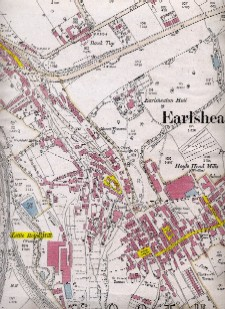
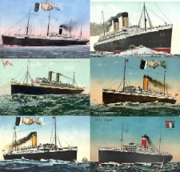
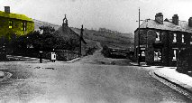
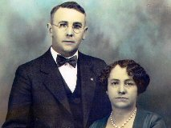
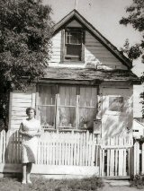
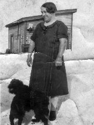
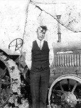
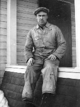

|
West Yorkshire  Earlsheaton, (or Soothill, Nether) was a hamlet and ecclesiastical district in the parish of Dewsbury. Read more... |
|
Inquest Report  Dewsbury Reporter newspaper article dated August 31, 1889 regarding the inquest into the death of Scott Exley. Read more... |
|
West Yorkshire  Thornhill Lees was a village and ecclesiastical parish formed in 1859 from the parishes of Dewsbury and Thornhill located one mile south from Dewsbury. Read more... |
|
Providence Bottle Works Thornhill Lees West Yorkshire  This article was published by the Dewsbury Reporter in their Men of Science supplement. Read more... |
|
 Steam ships departing from Liverpool to North America taken by our great-grandparents and their families. Read more... |
|
Saskatchewan Routes  Beginning in the early spring of 1905, the Canadian Northern Railway concentrated its efforts on completing track-laying between Kamsack, Saskatchewan and Edmonton, Alberta and between Melfort and Prince Albert, Saskatchewan. Read more... |
|
Saskatchewan  Warman got its start as a community in 1905, when Canadian Northern Railway completed track-laying between Kamsack and Edmonton. Read more... |
|
Saskatchewan  Saskatoon, a commercial and educational centre in the province of Saskatchewan, is situated on the banks of the South Saskatchewan River. Read more... |
|
Saskatchewan  Lumsden is located in the heart of the Qu'Appelle Valley, 19 miles northwest of Regina. Read more... |
|
Saskatchewan  Conquest is a village located in the Rural Municipality of Fertile Valley in Saskatchewan about 60 miles southwest of Saskatoon and 128 miles northwest of Moose Jaw. The village was erected in 1911, the same year that the Canadian Northern and Canadian Pacific Railways finished laying their tracks to Conquest. Read more... |
 Kirk House Church Hill Earlsheaton, Yorkshire Ann Exley's Home 1891 |
|  Lees Moor, Thornhill Lees Watson's Home 1901 |
Sam Exley was born April 4, 1885 in Earlsheaton, Yorkshire, a village east of Dewsbury. His father, Scott Exley was born March 30, 1854 in Earlsheaton. His mother, Ann Exley was born November 28, 1856 also in Earlsheaton. Scott and Ann were married close to eight years before Sam was born. When Sam was only four years old, his father drowned in Little Royd Mill Dam on August 25, 1889 in Earlsheaton. Sam’s father was only 35 years old when he died. At the inquest held at the Spangled Bull Inn in Earlsheaton, the jury’s verdict was that he had committed suicide “whilst of unsound mind”. As a result, Sam was an only child.
|  Sam Exley & Mary Emily Imeson Wedding Day - January 5, 1907 |
By 1891, Sam and his mother still lived in Earlsheaton on Church Hill in Kirk House. His mother was employed as a shopkeeper. She needed a husband and a father for her son. She met Edmund Watson, who was a widower and had a son Charles William. Edmund Watson and Ann Exley married December 8, 1894 at St Mark’s Church in Dewsbury, Yorkshire. The family moved to Thornhill Lees, a village just south of Dewsbury. By 1901, Edmund, Ann and their sons were living on 10 Lees Grove in Thornhill Lees. Sam Watson Exley was working for the Providence Bottle Works in Thornhill Lees as a fireman. When Edmund, Ann and Charles William left for Canada in 1906, Sam moved to South Elmwood Street in Dewsbury. While living in Thornhill Lees, Sam had become friends with William Flowers who lived in the same neighbourhood as he did and also worked at Providence Bottle Works. Sam had become interested in William Flower’s older sister Mary Emily Imeson.
 William Flowers Percy & Sam Exley Saskatoon 1911 |
Mary Emily Imeson was born May 24, 1881 on Hill End, Wakefield Old Road, Earlsheaton, Yorkshire. Her father, Thomas Imeson was born November 6, 1856 in Great Driffield, Yorkshire. Her mother, Margaret Thomas was born May 1, 1860 in Derby, Derbyshire. Mary Emily’s older brother Philip was born on February 8, 1879. She became fatherless soon after her birth when her father died November 5, 1881 in Earlsheaton of typhoid fever.
Mary Emily’s mother was a widow with two children at age 21. About a year later, Mary Emily’s mother began a relationship with widower Charles Flowers, who was a blacksmith from the Thornhill area. They married January 12, 1884, setting up house on New Street in Earlsheaton, and in 1887 moved to Walker Street in Thornhill Lees. Charles and Margaret Flowers had four children, George (1885), William (1889), Joseph (1891) and Lily (1893). Mary Emily’s step-father died of heart disease February 1, 1896 in Thornhill Lees.
Mary Emily’s mother and her family of six children continued to live on Ingham Road in a house that had been built by her step-father. Mary Emily’s mother became good friends with William Carruthers, who worked at the Providence Bottle Works as a glass bottle blower. After William’s wife died in early 1899, they began a relationship and married September 29, 1900 in Dewsbury. Margaret and William had one child, Arthur born in 1900 on Ingham Road in Thornhill Lees. Emily lived at home in Thornhill Lees and worked as a woolen weaver at the Wormalds and Walker Factory on Thornhill Road, West Vale.
 William Flowers Saskatoon - 1911 |
 William Flowers & Sam Exley Saskatoon - 1911 |
Mary Emily met Sam Exley, who was a friend of William, her younger brother. Sam Watson Exley (age 21) married Mary Emily Imeson (age 25) on January 5, 1907 in Dewsbury, West Riding of Yorkshire. Emily lived in Thornhill Lees and worked as a cloth weaver. Sam Exley lived on South Elmwood Street in Dewsbury, but moved to Thornhill Lees and continued to work at the glass bottle works as a fireman, so Sam and Emily continued to live in the area. Sam and Mary Emily Exley lived at Forest Cottages in Thornhill Lees. Their first son Percy Scott Exley was born in Dewsbury on November 4, 1907. Their second son William Exley was born on November 13, 1909 in Dewsbury.
|  2503 Melrose Avenue Saskatoon - c1913 Built by William Flowers & Sam Exley |
 Charles William Watson South Saskatoon Signal Tower c1913 |
Sam and Mary Emily, along with Percy, age of 2½ years, and Bill, age 4 months immigrated to Canada. They boarded S. S. Tunisian of the Allan Lines in Liverpool on March 10, 1910. They arrived in Halifax March 18, 1910. The family traveled by train from Halifax to join Sam’s parents in Warman, Saskatchewan where a railway job was waiting for Sam Exley.
William Flowers decided that he should visit Canada, to visit with his sister Mary Emily and best friend Sam Exley. He departed Liverpool on May 13, 1910 on the SS Megantic, a White Star Dominion liner. He arrived in Montreal about eight days later. He traveled by train via Winnipeg to Warman Saskatchewan where he met up with Sam Exley and his sister Emily. He very quickly had a job with the Canadian Northern Railway where Sam worked.
 Sam & Percy Exley Edmund Watson c1919 |
Willie Exley 1921 |
In the autumn of 1910, Sam Exley’s job as a section hand with the Canadian Northern Railway took him and his family to Lumsden, Saskatchewan.
By the later part of 1910, Margaret was receiving glowing reports from William and Mary Emily encouraging them to move to Canada as well. So on December 9, 1910, Mary Emily’s mother Margaret sold her two houses located on Ingham Road, Thornhill Lees, and made arrangements to immigrate to Canada early in 1911. Mary Emily’s step-father, William Carruthers was torn, as he hated to leave his own children behind, but he also wanted to stay with Margaret. He eventually decided to stay, and move back with his children on Walker Street. Mary Emily’s brother Philip and his wife Annie had also remained in England.
 Percy, Margaret, Bill Exley 1927 |
|  Mary Emily Exley & Dogs 1927 |
Margaret and four of her remaining off-spring journeyed to Liverpool to board the Empress of Britain on February 11, 1911, for their trip to Canada. They arrived in Saint John, New Brunswick on February 18, 1911. When they arrived in Saint John, Margaret’s health had deteriorated and she became very ill. As a result, she was not well enough to continue on to Lumsden, Saskatchewan where Mary Emily and her family lived. She was also too ill to return to England, so she stayed in Saint John until her health improved. The family stayed in Saint John for more than six weeks while she recovered from her illness. During the family’s stay in Saint John, Margaret decided that when she was well enough to travel, she would return to England instead of finishing her trip to Lumsden.
Bill Exley 1927 |
Winnie & Mary Emily Exley 1927 |
Mary Emily’s mother encouraged her sons George and Joseph and her daughter Lily to finish their trip west to Saskatchewan. On April 6, 1911, Margaret and her youngest son Arthur boarded the Empress of Ireland for their return trip to Liverpool. They traveled third class arriving in Liverpool April 15, 1911. On their return home William Carruthers was thrilled to see them. He was still working for Kilner Brothers at the Providence Glass Works in Thornhill Lees. After their return, William and Margaret and the family lived at Prospect Terrace at 49 Brewery Lane in Thornhill Lees.
The Flowers’ siblings did decide to stay in Canada. They boarded a train for the long journey to Lumsden, Saskatchewan, a distance of over 2600 miles to reunite with William and Emily. Soon after arriving in Lumsden, Mary Emily’s three brothers, George, William and Joseph moved to Warman, Saskatchewan to work beside Edmund and Charles William Watson as section men for the Canadian Northern Railway. Lily remained in Lumsden with her sister Emily and her family.
Mary Emily Exley 1930 |
Margaret Exley 1930 |
By the autumn of 1911, the Flowers’ siblings were missing their homeland, and decided to return to Yorkshire as soon as they could make arrangements. Sam’s mother Ann Watson decided that she would travel with them to visit family still living in England. They traveled by train to Quebec City, and sailed back to Liverpool on the Empress of Britain. They departed on November 3, 1911 and arrived in Liverpool on November 10, 1911. It was a rough crossing. They arrived back home in Thornhill Lees virtually penniless. They later learned that the Empress of Ireland had collided with another ship and sank in the Gulf of Saint Lawrence, and recalled that Margaret and Arthur had taken that same ship three years earlier.
Margaret Exley c1930 |
|  Percy Exley 1931 |
Sam and Mary Emily remained in Lumsden; as Mary Emily was due to give birth. Their first daughter Margaret Anne Exley was born on November 1, 1911 in Lumsden, Saskatchewan.
On his return to work in the Saskatoon area early in 1912, Sam and family took up residence in southwest Saskatoon, where he continued to work for the Canadian Northern Railway. Soon after, Sam was promoted to be a signalman. He was assigned to work at the South Saskatoon Signal Tower, which was located at the diamond where the Canadian Northern and Grand Trunk Pacific Railway lines crossed.
Margaret Exley at Beaver Creek 1931 |
Winnie Exley at the Fair c1936 |
A year after Sam’s mother Ann had gone to visit England, her husband Edmund decided it was time for his own visit to his homeland. Edmund and Willie took the train from Saskatoon to Montreal. They departed Montreal on the SS Magantic on November 22, 1912 and arrived in Liverpool December 1, 1912. They were able to visit family and friends, and of course catch-up with Ann. They remained in England for the winter and returned to Canada the next spring. On April 19, 1913, Edmund and Ann Watson departed from Liverpool on the SS Tunisian and arrived in Montreal April 27, 1913. They traveled back to Saskatoon by train.
Cora Exley c1939 |
Cora Exley c1939 |
Mary Emily’s step-father William Carruthers died at age 58 on March 31, 1913 at his home in Thornhill Lees of heart disease and bronchitis. William Carruthers is buried at the municipal cemetery in Dewsbury on April 2, 1913 in a Private Grave plot I 109, along side his first wife Annie.
William Flowers decided to travel back to Canada about a year after returning to England. He departed Liverpool April 26, 1913 on the Laurentic and arrived in Quebec City on May 7, 1913. He traveled to Saskatoon, Saskatchewan on the Canadian Northern Railway. Besides visiting Sam and Emily, he helped Sam build a house near the South Saskatoon Signal Tower. After the house was finished, Sam and family lived there for a few years. The house was eventually moved to 2503 Melrose Ave in Saskatoon.
Cora & Winnie Exley c1939 |
|  Percy Scott Exley 1941 |
During the two winters William Flowers had spent in Canada, he experienced the most severe conditions, nearly freezing to death. The winters were so cold that the Mounties used to push people along if they stopped so that they would not freeze. William had difficulty adjusting to this severe climate. As the summer of 1914 neared, William was missing England and his family and decided that it was time to go home. He traveled by train back to Montreal, sailing on the Megantic on July 4, 1914 and arriving in Liverpool on July 12, 1914, on his way to his home in Yorkshire. This was his last visit to Canada and the last time he visited his sister.
Sam Exley and his family continued to live in Saskatoon. Sam continued to work for the Canadian Northern Railway. During their stay in Saskatoon, Sam and Emily’s second daughter Cora Exley was born on August 3, 1918.
Between 1918 and 1923, the Canadian Northern Railway was combined with several other railways to form Canadian National Railways.
Cora Morrison with Robert c1942 |
Howard, Donnie & Margaret Miller 1942 |
Bill, Anne & Billie Exley 1943 |
In 1920, Sam Exley and family moved to Conquest, Saskatchewan. Canadian Northern provided a boxcar located next to the diamond where Canadian Northern Railway and Canadian Pacific Railway’s tracks crossed about a mile northwest of town. Sam and Emily set up house within the boxcar, and lived there about seven years. Sam and Emily’s youngest daughter Winnie was born in Conquest on May 13, 1921.
During the Exley family’s stay in Conquest, their oldest son Percy Scott completed his grade six in 1921. After that, Percy worked at various jobs in and around Conquest, including working at a butcher shop where he lost part of his pointing finger, working for the Canadian National Railway as a section man, and working at area farms as a farmhand. It was also at Conquest that William Exley, Sam and Mary Emily’s youngest son, started his career with the Canadian National Railway. Margaret Anne was a member of the Northern Saskatchewan high school Basketball Champion team from Conquest (1927-28). Sam and Mary Emily Exley attended and participated in the United Church. Sam was a member of the local IOOF Lodge. He also played soccer football (as Sam called it) with the local team.
William & Anne Exley at Forestry Farm c1945 |
Cora, Coralee, Robert & Robert Morrison 1945 |
Sam worked in Conquest until 1927, when he moved back to Saskatoon with his family and soon moved into the downtown area. Sam Exley began a new career as an insurance agent with the Dominion Life Insurance Company.
Sam’s step-father Edmund Watson died at age 62 on October 26, 1930 in Saskatoon, and was buried at Woodlawn Cemetery in Saskatoon on October 28, 1930 (grave plot 80-L034-S1/2).
Sam’s step-brother Charles William Watson died June 8, 1931 at only 40 years of age. Sam’s mother Ann buried Charles William on June 9, 1931 at Woodlawn Cemetery in Saskatoon (grave plot 80-L034-N1/2).
Winnie Exley on Riverbank c1945 |
William & Anne Exley 1945 |
Bill & Billie Exley 1946 |
 Sam & Billie Exley 1948 |
Mary Emily’s mother Margaret Carruthers died at age 71 of Myocardial degradation on July 22, 1931 at Dewsbury Infirmary. Margaret Carruthers was buried in Ossett Graveyard (reference NG E6).
By 1931, Sam and family had moved right downtown in Saskatoon. In 1933, Margaret was still living at home and worked as a salesperson at Eatons Department Store, which she did until 1936.
Sam’s mother Ann Watson died at age 77 on August 27, 1934 and was buried at Woodlawn August 30, 1934 (grave plot 80-L034-S1/2). Burial arrangements were handled by her only child Sam Watson Exley.
About 1936, Sam’s daughter Margaret Anne Exley married Howard Miller in Saskatoon.
Sam Exley 1956 |
Howard & Margaret Miller & Sam Exley 1960 |
Sam Exley 1965 |
Sam Exley 1965 |
By 1939, Sam was an agent for the Dominion of Canada General Insurance Company.
On January 14, 1940, Sam’s daughter Cora Exley married Robert Morrison in Saskatoon.
By 1942, Sam and Emily’s son William had moved into Saskatoon as an operator for the Canadian National Railways.
In 1942, Sam was also a salesman for the Casualty Company of Canada. He also had established the Yorkshire Fish & Chips Shop located Broadway Ave in Saskatoon. Fish and chips were served like they had been in Yorkshire, in used newspapers. This was very much a family business as Sam had his oldest son Percy and his youngest son’s wife Anna working at the shop. The shop was in business for about three years.
On March 1, 1942 Sam’s oldest son Percy Scott Exley married Lillie Pearl Anderson in Saskatoon.
R: Margaret Miller, Cora Morrison Lillie & Percy Exley Howard Miller, Anne & Bill Exley F: Howard Exley, Mary Emily Exley, Sam Exley, Unknown c1950 |
Mary Emily & Sam Exley Gravestone |
In 1945, Sam Exley delved into real estate as well as continuing as an insurance agent. About 1952, Sam Exley focused his attention as a Real Estate Agent.
Mary Emily Exley died November 24, 1955, age 74, and was buried at Woodlawn Cemetery in Saskatoon (grave plot 45A-L011-SH) on November 28, 1955.
Sam lived for another fifteen years in Saskatoon. The highlight of this period was when Mary Emily’s sister-in-law Phyllis Celia visited Canada from her home in Yorkshire in 1965 for a four month period. Sam Exley escorted her across Canada so that she could visit her husband’s nephews and nieces and their families from Quebec to Vancouver Island.
Sam died February 8, 1971, age 85, and was buried at Woodlawn Cemetery in Saskatoon beside Emily (grave plot 45A-L011-SH) on February 10, 1971.